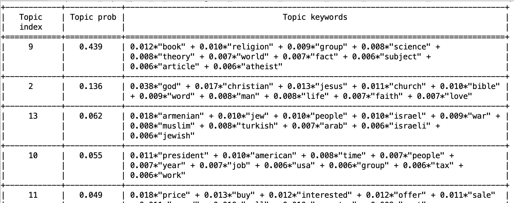
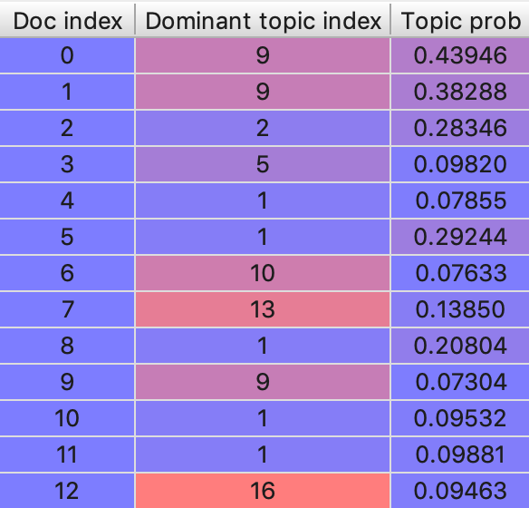
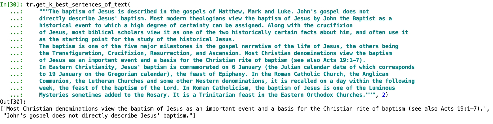
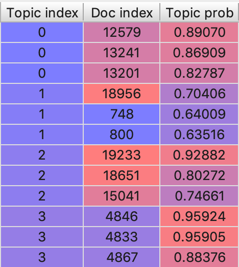
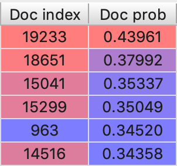

Introduction¶
Objective¶
The objective of this project was to create a tool that, given a set of documents, performs the following actions:
- Identify the topics present in the collection of documents.
A topic is a set of words that seem to be related, and seem to talk about an specific theme. For example, if the collection of documents comes from a news page, the topics obtained from that collection probably will be about religion, sports, technology, … But the topic itself doesn’t tells us the theme. It is described by the words contained in that topic. For example, a topic related with christianism may have the following words: god, jesus, christian, bible, … With that words, we can identify that that topic talks about religion/christianism.

Example of some of the topics obtained with this tool on the 20_newsgroups dataset¶
- Identify the relation of each document in the collection with each topic.
Each document will have a probability of being related with each topic. New texts can also be used to identify it’s relation with the topics.
Example of the probability of a text document being related with some of the topics showed above¶
- Classify each document in the collection inside a topic.
After identifying the relation of each document in the collection with each topic, the obtained probability can be used to classify each document inside the topic with highest probability. New texts can also be used to classify them in a topic.
Example of the topic assigned to the first 12 documents of the 20_newsgroups dataset (and the probability of that documents being related with that topic)¶
- Create an extractive summary of a given document.
An extractive summary consists in a set of sentences directly extracted from the original text of the document. That sentences aim to summarize the whole content of the document.
Example of the summarization of a text (2 sentences where requested)¶
Main utility¶
With the functionality mentioned above, the main utility of this tool is to, given a new text document, perform the following pipeline:
Classify the document into one of the obtained topics
Obtain an extractive summary of the document
Other functionality¶
Also, the following functionality was obtained extending this tool:
- Obtain the most representative documents of each topic.
The most representative document of a topic are the documents with the highest probability of being related with that topic.
Example of the 3 most representative documents of some of the topics showed above¶
- Obtain the documents of the collection more related with a new text document.
The relation between the documents in the collection and the new texts can be obtained as follows:
Obtain the topics more related with the given text.
Obtain the documents more related with the topics obtained in step 1.
Multiply the probability of the text being related with each topic by the probability of the most representative documents of that topic.
Order the documents by the probability obtained in step 3.
Example of the documents in the 20_newsgroups dataset related with the christianism text showed above¶
- The following text is part of the document in the 20_newsgroups dataset more related with the christianism text showed above:
“Rick, I think we can safely say, 1) Robert is not the only person who understands the Bible, and 2), the leadership of the LDS church historicly never has. Let’s consider some “personal interpretations” and see how much trust we should put in “Orthodox Mormonism”, which could never be confused with Orthodox Christianity.
In one of his attacks on Christians, the Mormon Apostle Bruce R. McConkie said they “thrash around in…darkness in trying to identify Elohim and Jehovah and to show their relationship to the promised Messiah.” He also said Christians are wrong to believe “that Jehovah is the Supreme Deity [God the Father],” and that Christ “came into mortality” as His “Only Begotten” Son. McConkie then stated what Mormons believe today to be the truth about the matter. He said that “Elohim is the Father” and “Jehovah is the Son.”
…”